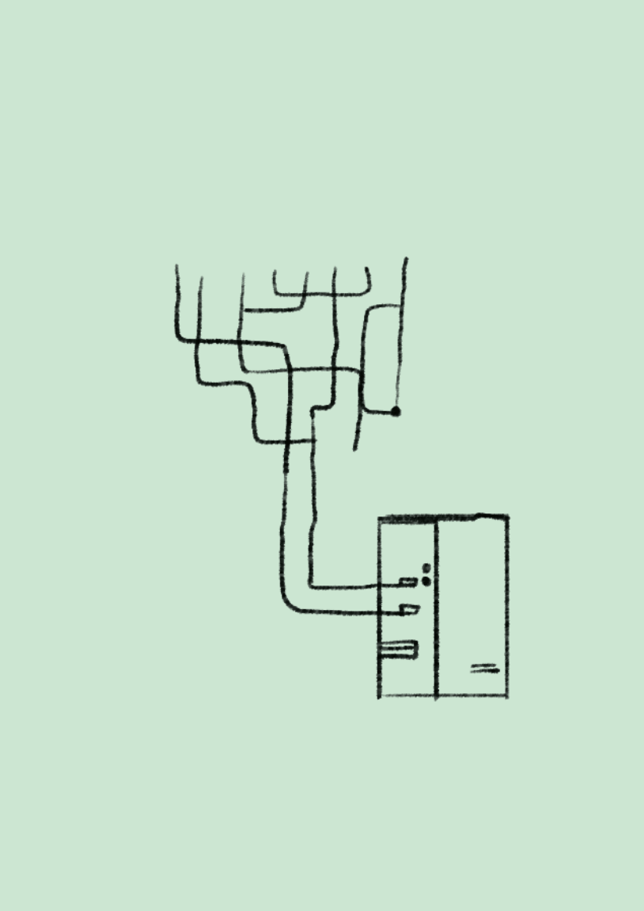
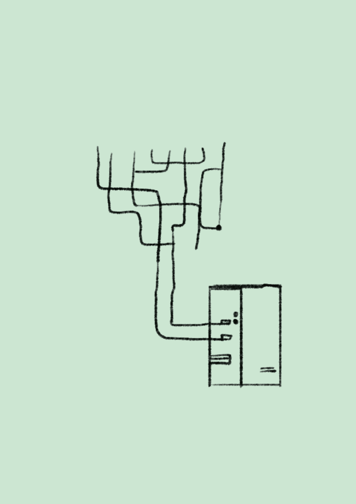
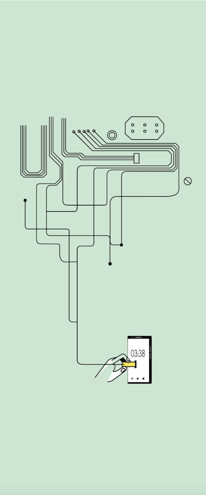
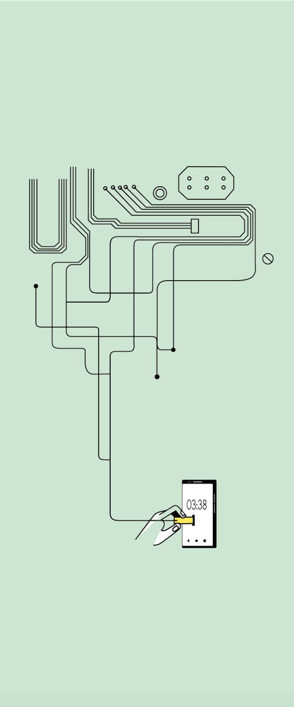

Nikhil Nimawat's PORTFOLIO
USECASES & INDEX
Illustrations catagorized by what they were used for.
Editorial illustrations for blogs
Illustrations to go with the corporate blogs and emailers.
Drawings from Instagram
Artworks done other than the professional work.
Product Onboarding and web illustrations
Mobile/web-app onboarding screens assistive illustrations.


____INDEX_______
Screenshot from the Cendrol website for Desktop
Mobile version for the same package descriptor
Catalogue descriptor design for web

What it looked like before
————————————————
Cendrol is a construction company, with the package descriptor, they are putting up an easy way for the customers to find out the information about the house plan they choose.
With our design work we've tried to combine the above 3 pdfs, which listed out the different contruction plans and what you get with them saparately. Doing that was a problem for them as they had a hard time comparing the pdfs with each other. With this website design they are able to compare the differences in the different plans without much hassle.


Editorial illustrations for blogs
This was made for a blog that talked about Voice tech for the next billion users. The blog described how voice tech is the place where next Billion users will be. Various interviews were conducted as a part of UX research, and mostly the people who were conducted were working class people around Bangalore. I was supposed to capture the difficulty the Indian people might have with working with apps essential to their work.

A College kid leaving for college, we launching our product in beta. Play on the word “beta”
This was made with the blog describing how if feels like to come up with a new illustration style
Editorial illustrations for blogs
Emailers
The First Illustration is placed with an emailer which is titles “our beta is leaving for college”this is a play on the word “beta version” (which is a common word for “Son”). They describe the feeling that they get launching the product is similar to this.
Second one was about the updates since the last quarter. The subtext fot the image is that we are showing ourselves humble. And it was full with the technical updates and achievements that slang labs team has made in that time, we didn’t want to write it out that we are humble but rather subtly show that through that illustration, as we are giving the power in the hand of the reader, and slang labs is posing like a nervous kid showing his report card to the big man.
A College kid leaving for college, we launching our product in beta. Play on the word “beta”
This was made with the blog describing how if feels like to come up with a new illustration style
Editorial illustrations for blogs
Image one was made to go with the edition of the blog which included the experience of bieng at the Google I/O event. another requirement with both was to keeping the brand consistent with the previous work(color schemes).
Second one was about the updates since the last quarter. The subtext fot the image is that we are showing ourselves humble. And it was full with the technical updates and achievements that slang labs team has made in that time, we didn’t want to write it out that we are humble but rather subtly show that through that illustration, as we are giving the power in the hand of the reader, and slang labs is posing like a nervous kid showing his report card to the big man.
Product Onboarding and web illustrations.
Illustrations made with the intent to work best with screens and assists or delights the user in their UX journey.


illustration was made for one of the onboarding screens of a job searching app.
illustration for the “request a demo” button, indicating it to be like opening a door to the world of the voice functionalities.
Product Onboarding and web illustrations
First Image
For the first illustration I was approach by JobU, a startup trying to make a market around making a job searching app which works like tinder, mainly based in Australia. They asked me to make illustrations for their onboarding illustrations to convey the metaphor of a networking event.
Second Image
The bottom one is a part of a larger illustration style that i had created for Slanglabs.The illustration style featured avoiding use of human figures, and rather using objects and hands for conveying the ideas.For example, this illustration is placed next to the “Request a Demo” and opening a door is a metaphor for first steps into the using the Slanglabs’ product.


This image is part of the process, rough sketch for coming up with final illustrations for the page. These were made for the use cases page. How can your app benefit by having voice functionality inside itself.
Product Onboarding and web illustrations

Usecases for voice in apps. 1. Simplified Navigation: ApplicationMenu->Programs->Accessories->system tools->maintenance wizard. Comparing the app navigation to windows98’s application menus, how sometimes they have menus in menus and how voice search can help with this.
2. Improved Productivity:
Through this image of 4 hands trying to operate a Smartphone Keyboard, we were trying to show the how hard it can be to type on a small smartphone keyboard
sometimes, through exaggeration.
3. Reduced Ambiguity
This is simply to show the ability to prompt stuff visually and through voice.


Product Onboarding and web illustrations
The next 4 pages are about the making of this illustration style shown in the adjacent page and the next pages.
For making this illustration style I was given this brief. The idea was to make something “quirky but professional” and avoiding the cliches of illustrations on the web, which are filled with soft curved vectors of humans figures. As Khoi Vinh describes them as monoculture, in his blog.
https://www.subtraction.com/
2018/01/03/two-different-kinds-of-illustration/
contd.

 
 
 some comment
Product Onboarding and web illustrations

Contd.
The process started with me coming up with different styles, regardless of the subject matter.
Color scheme was already set,
it’s bluish green and orange were the primary colors and supporting them were a faded yellow and this blue.
We chose to go ahead with the third style, shown adjacent.
Subject matter. Since using human figures was not an option, but we had to show some expressions, so, instead we chose to use "hands" as a repetitive element , as they are also quite expressive.
Contd.
Illustration to sum up what slang does slang taking instructions from the user and interpretting them for other apps.
illustration made for 404 page, which the caption "Eror404, you've drifted too far"
Product Onboarding and web illustrations
This is how illustrations look on the page placed together.
————————————————
Adjecent Images 1.
Illustration for the vax section, to abstractly convey what "vax"(voice augmented Experiences) meant, main purpose of this illustration was to establish a brand style at the beginning only.
Adjecent Images 2. Illustration for the 404 page. This illustration comes up when somebody enters some wrong url, this is with the caption, “Eror404, Drifted too far?”. The idea is basically showing Guliver has drifted too far and into the unknown.


Thumbnail illustration for the blog “key takeways from Google i/o’19”
Header image for the Product updates blog and emailer.
Drawings from Instagram

First one.This is an old shop in Bangalore that just sold bananas, i had not seen anything like this before. One of the person’s I was getting my portfolio reviewed from told me to turn these things into a mockup and so here it is.

Second one is again just a sketch of the time i had just come to Bangalore.

.jpg)
Drawings from Instagram
Three of these drawings were created in order to create the colorful Indian fashion of everyday people. Another one of the drawings is of the cooler we use back in Rajasthan.